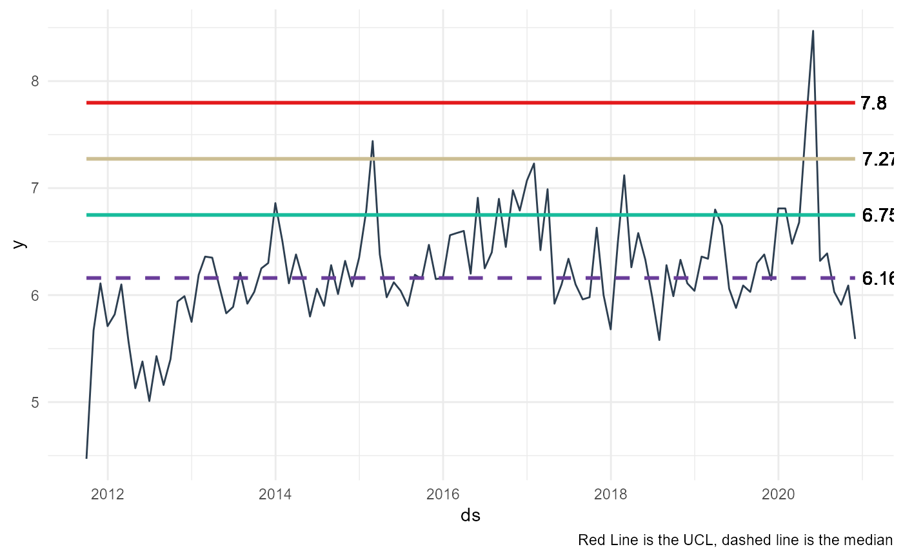

A control chart is a specific type of graph that shows data points between upper and lower limits over a period of time. You can use it to understand if the process is in control or not. These charts commonly have three types of lines such as upper and lower specification limits, upper and lower limits and planned value. By the help of these lines, Control Charts show the process behavior over time.
ts_qc_run_chart( .data, .date_col, .value_col, .interactive = FALSE, .median = TRUE, .cl = TRUE, .mcl = TRUE, .ucl = TRUE, .lc = FALSE, .lmcl = FALSE, .llcl = FALSE )
| .data | The data.frame/tibble to be passed. |
|---|---|
| .date_col | The column holding the timestamp. |
| .value_col | The column with the values to be analyzed. |
| .interactive | Default is FALSE, TRUE for an interactive plotly plot. |
| .median | Default is TRUE. This will show the median line of the data. |
| .cl | This is the first upper control line |
| .mcl | This is the second sigma control line positive |
| .ucl | This is the third sigma control line positive |
| .lc | This is the first negative control line |
| .lmcl | This is the second sigma negative control line |
| .llcl | This si the thrid sigma negative control line |
A static ggplot2 graph or if .interactive is set to TRUE a plotly plot
Expects a time-series tibble/data.frame
Expects a date column and a value column
Steven P. Sanderson II, MPH
#> Warning: package 'stringr' was built under R version 4.0.3df <- healthyR_data df_monthly_tbl <- df %>% mutate(ip_op_flag = str_squish(ip_op_flag)) %>% filter(ip_op_flag == "I") %>% select(visit_end_date_time, length_of_stay) %>% arrange(visit_end_date_time) %>% summarise_by_time( .date_var = visit_end_date_time , .by = "month" , alos = round(mean(length_of_stay, na.rm = TRUE), 2) , .type = "ceiling" ) %>% mutate( visit_end_date_time = visit_end_date_time %>% subtract_time("1 day") ) df_monthly_tbl %>% ts_qc_run_chart( .date_col = visit_end_date_time , .value_col = alos , .llcl = TRUE )